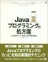
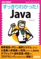

アスキー, ISBN:4756142044, 2002.12
アスキー, ISBN:4756142044, 2002.12artonさんとの初めての共著です。1.4ベースのJ2SEをベースにJavaでのプログラミング技法について解説しています。
最近の著作です。はるか昔にも雑誌の記事とか書いていましたけど、散逸してしまいました。
「Groovy コンファレンス 2008」でGantのお話をさせていただきました。その時の資料とサンプルです。サンプルは、資料の最後の大規模開発の例になっています。
日本 Java ユーザグループの「クロスコミュニティカンファレンス」で、Swing Application Frameworkのお話をさせていただきました。その時の資料、操作手順、サンプルアプリケーションです。操作手順、サンプルアプリケーションの対応は、資料の中に書かれていますので、資料の中身を参照してください。
developerWorksに「Groovy を DSL として用いてプラグイン機能を実現する」という記事を書かせていただきました。ここで紹介しているサンプルのプラグインライブラリは、以下からダウンロードください。2008/3/28
| プラグインライブラリ | pluginlib.zip |
| サンプルプログラム | pluginexample.zip |
アスキー, ISBN:4756142044, 2002.12
artonさんとの初めての共著です。1.4ベースのJ2SEをベースにJavaでのプログラミング技法について解説しています。
アスキー, ISBN:4756143075, 2003.6
Webアプリケーションフレームワークとして有名なStrutsの解説書です。
アスキー, ISBN:4756144209, 2004.2
J2EE全般についての解説書です。
 アスキー, ISBN:4756145256, 2004.10
アスキー, ISBN:4756145256, 2004.10
JSFについての解説書です。Sun Java Studio Creatorを利用したケースとSunの参照実装を使用したケースについて、プログラミング方法を解説しています。

翔泳社, ISBN:4798106976, 2004.7
実践Javaと似ていますが、単にコーディングフェーズのみではなく、もっと開発フェーズ全般に関する知見をまとめたものです。
 アスキー, ISBN:4756146554, 2005.8
アスキー, ISBN:4756146554, 2005.8
コードインスペクションツール、FindBugsのバグパターンについて解説しています。

アスキー, ISBN:4756151566, 2008.3
初めての入門書です。これ一冊で、Java全般の知識が得られることを目標にしました。これまでのJavaの歴史からプログラミング、JavaEEなどの周辺技術や、Javaによるオープンソース製品の紹介までを網羅しています。
 アスキー, ISBN:4048676881, 2009.5
アスキー, ISBN:4048676881, 2009.5
初めて翻訳に挑戦しました。アジャイル界で有名な、ロバート C マーチン氏が著された、Clean Codeです。こまかなコードの書き方に焦点を当て、どのようにコードを書けば良いのかを徹底的に議論します。
 翔泳社, ISBN:4798117994, 2009.1
翔泳社, ISBN:4798117994, 2009.1
artonさんとの共著で、Rubyの本も、お手伝いさせていただきました。私は、1章「データの基本」、2章「コンピュータの仕組み」を書かせていただきました。
 翔泳社, ISBN:4798118001, 2009.2
翔泳社, ISBN:4798118001, 2009.2
artonさんとの共著で、Rubyの本も、お手伝いさせていただきました。私は、7章「アルゴリズムと計算量」を書かせていただきました。
 翔泳社, ISBN:479811801X, 2009.8
翔泳社, ISBN:479811801X, 2009.8
artonさんとの共著で、Rubyの本も、お手伝いさせていただきました。回路シミュレータをRubyで作成しながら、デザインパターンについての解説をさせていただきました。ページの関係で、削除された分は、こちらを参照してください。
 アスキーメディアワークス, ISBN:978-4-04-868953-3, 2011.1
アスキーメディアワークス, ISBN:978-4-04-868953-3, 2011.1
Oracle Coherenceの書籍の翻訳。とても技術的に面白い製品で、インメモリデータグリッドへの興味をかきたてられました。
アスキー, 2002.9
サーブレット、JSP、JAX API、Webサービスの解説記事を書かせていただきました。
翔泳社, 2005.9
コーディングルールについて解説記事を書かせていただきました。
翔泳社, 2006.4
PofEAAについて解説記事を書かせていただきました。ページ数の関係で掲載できなかった原稿は、以下からどうぞ。
Webプレゼンテーション
O-Rマッピング(掲載できなかった部分)
ロック(掲載できなかった部分)
パターン一口解説
翔泳社, 2006.7-2008.4
コーディングの掟の連載をさせていただきました。普段目にする、おかしなコードを取り上げて、何が問題なのか、どうすべきなのかを考察します。
翔泳社, 2008.9
開発の現場で連載した、コーディングの掟をムックにまとめたものです。
日経SYSTEMS, 2007.10-2008.3
「教えて！実装＆テスト工程」の連載をさせていただきました。普段のプロジェクトの中で、気付いた実装＆テスト工程での問題点とその対処方法についてまとめたものです。
日経SYSTEMS, 2008.4-2008.9
「Javaシステムに異常あり」の連載をさせていただきました。実際に筆者の経験したJavaの開発システムで発生した問題と、それに対する対処方法をまとめたものです。
翔泳社, 2009.8
Java EEで、良く使用される仕様を、解説したものです。
ご感想をお聞かせください(ruimo@ruimo.com)。なお、誠に勝手ながら、HTMLメールはサーバーで全て削除されますので、テキストメールでお願いいたします。